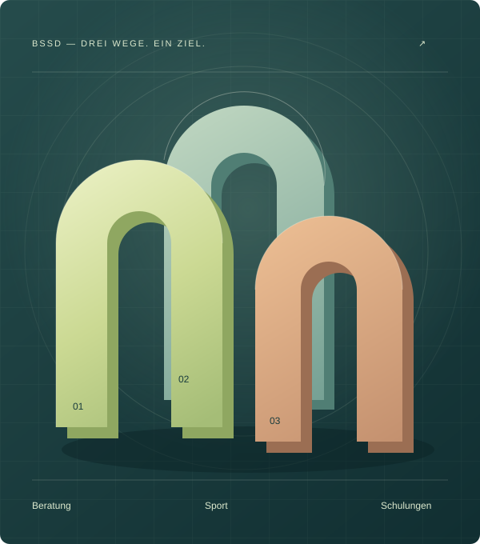

BSSD · Gregor Nebel
Klarheit.
Haltung.
Stärke.
Veränderung beginnt mit einem neuen Blick.
Beratung, Sport und Schulungen, die Menschen handlungsfähig machen. Für den Alltag, für herausfordernde Momente und für den nächsten Schritt.
Der Mensch im Mittelpunkt.

Gemeinsam weiter.
01 / Das Angebot
Drei Wege.
Ein gutes Stück weiter.
Manchmal braucht es ein Gespräch. Manchmal Bewegung. Manchmal neue Werkzeuge. Gemeinsam finden wir den passenden Ansatz.
Neue Perspektiven.
Mehr Miteinander.
Systemische Familien- und Krisenberatung, Unterstützung bei Mobbing und Begleitung in Konflikten.
Beratung entdeckenStärker werden.
Bei dir ankommen.
Personal Training im Boxen, Kickboxen und Kraftsport. Mit einem Plan, der zu dir und deinem Alltag passt.
Training entdeckenSicher handeln.
Ruhe bewahren.
Praxisnahe Schulungen zu Deeskalation, Gewaltschutz und Gesprächsführung für Menschen und Teams.
Schulungen entdecken02 / Die Haltung dahinter
Fachlich fundiert.
Menschlich nah.
Pädagogik lehrt Verstehen. Sport lehrt Ruhe unter Druck.
Ich bin Gregor Nebel. Mit BSSD verbinde ich Pädagogik und Soziale Arbeit mit systemischer Beratung, Kampf- und Kraftsport. Was meine Arbeit verbindet: genau hinsehen, klar kommunizieren und Menschen in ihrer eigenen Handlungsfähigkeit stärken.
Mehr über mich und meine Arbeit03 / Einzel-AAT®
Verhalten ändern.
Zukunft gestalten.
Anti-Aggressivitäts-Training für Jugendliche und junge Erwachsene ab 14 Jahren. Individuell begleitet, mit klaren Regeln und Raum für neue Wege.
Das Einzel-AAT® kennenlernenDer einzelne Mensch und seine Geschichte stehen im Mittelpunkt.
Biografie, Auslöser, Opferperspektive und Zukunftsziele.
Für Justiz und Jugendhilfe sowie freiwillig im Rahmen der Jugendhilfe. Start ohne Wartezeit auf eine Gruppe.
04 / Orientierung
Was bewegt
dich gerade?
Der passende Einstieg für deine Situation.
In unserer Familie ist gerade vieles schwierig.
Die systemische Familien- und Krisenberatung betrachtet Beziehungen und Belastungen im Zusammenhang. Auch bei Mobbing oder schulischen Krisen gibt es Unterstützung.
Zur BeratungIch möchte körperlich und mental stärker werden.
Im Personal Training stehen dein Trainingsstand, deine Ziele und dein Alltag im Mittelpunkt – von Boxen und Kraftsport bis zu Mobilität und funktionellem Training.
Zum SportangebotUnser Team braucht Sicherheit im Umgang mit Konflikten.
Schulungen zu Deeskalation, Gewaltschutz und Gesprächsführung geben Teams praktische Werkzeuge für herausfordernde Situationen.
Zu den SchulungenIch suche ein Anti-Gewalt-Training für einen jungen Menschen.
Das Einzel-AAT® richtet sich an Jugendliche und junge Erwachsene ab 14 Jahren. Auf der Angebotsseite findest du Informationen zu Ablauf, Zielgruppe und Voraussetzungen.
Zum Einzel-AAT®Der nächste Schritt
Alles beginnt mit
einem Gespräch.
Erzähle mir, was dich bewegt. Wir schauen gemeinsam weiter.